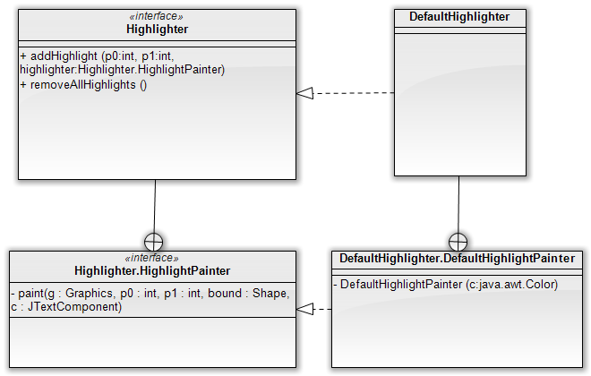

Úvod
Na príklade automatickej kontroly pravopisu v swingovskom textovom políčku sa dá ukázať množstvo zaujímavých vecí: automatické vyhľadávanie medzier medzi slovami, vlákna v Swingu ba i podporu pre zvýrazňovanie textu. Vytvorme si teda jednoduchú aplikáciu s textovým políčkom, kde môže používateľ zadávať text, a v prípade, že je nekorektný, mu ho aplikácia zvýrazní červenou farbou.
Delenie textu na slová
Mnohokrát sa stáva, že pre daný reťazec potrebujeme nájsť pozície
medzier (hraníc) medzi slovami. Samozrejme, jednou z možností by bola
implementácia vlastného algoritmu. Ale načo, keď existuje elegantná
trieda
java.text.BreakIterator,
ktorá to umožňuje realizovať bez akýchkoľvek problémov.
Ukážme si príklad jednoduchého kódu, ktorý nájde medzery medzi slovami:
BreakIterator iterator = BreakIterator.getWordInstance();
iterator.setText(" 1 23 4");
int pos = iterator.first();
while(pos != BreakIterator.DONE) {
System.out.println(iterator.current());
pos = iterator.next();
}Trieda, ako už naznačuje jej názov, je založená na princípe iterátora.
Inštanciu však nezískavame použitím konštruktora, ale cez statickú
metódu getWordInstance(). To je zámer, ktorý zväčšuje jej flexibilitu,
BreakIterator totiž umožňuje nachádzať dokonca aj zlomy riadkov, či
iterovať jednotlivé znaky. Iterátor si možno predstaviť ako kurzor,
ktorý je postupne posúvaný v slove zľava doprava. V každej chvíli kurzor
ukazuje na jednu z medzislovných hraníc. Metódou first() nájdeme prvý
výskyt hranice, metóda current() vráti index aktuálnej pozície kurzora a
nakoniec metóda next() posúva kurzor na ďalšiu hranicu a zároveň vracia
novú pozíciu.
V príklade je prvou hranicou začiatok textu, teda index 0. Po prvom
posune sa kurzor premiestni pred písmeno A, po druhom zase zaňho. Tretie
volanie metódy next() preskočí obe medzery a posunie sa pred písmeno B.
Ďalšie volanie sa nastaví za písmeno Y (teda na index 6) a posledné
volania vrátia hranicu pred a za jednoslovným „slovom” tvoreným znakom
výkričníka.
V našom príklade nás však nezaujímajú samotné hranice medzi slovami, ako skôr indexy udávajúce začiatky a konce slov. V našom príklade potrebujeme extrahovať indexy pre všetky tri slová:
| Slovo | Počiatočný index | Koncový index |
|---|---|---|
| A | 1 | 2 |
| BY | 4 | 6 |
| ! | 7 | 8 |
Kód, ktorý získa všetky slová, vyzerá nasledovne:
BreakIterator iterator = BreakIterator.getWordInstance();
iterator.setText(text);
int start = iterator.first();
int end = iterator.next();
while (end != BreakIterator.DONE) {
writeWord(text, start, end);
start = end;
end = iterator.next();
}
// spracujme aj posledné slovo
writeWord(text, start, end);Metóda writeWord() vypíšte časť slova medzi danými indexami.
Najdôležitejšie je ignorovať tie slová, ktoré sú buď prázdne (teda
predstavujú medzery či iné biele miesto) alebo zodpovedajú číslam či
interpunkcii. To zaistíme skontrolovaním prvého znaku metódou
Character.isLetterOrDigit().
public void writeWord(String text, int startIndex, int endIndex) {
String word = text.substring(start, end);
if (Character.isLetterOrDigit(word.charAt(0))) {
System.out.println(word);
}Kontrola pravopisu
Vo chvíli, keď vieme deliť text na slová, kontrola pravopisu je
jednoduchá. Stačí si urobiť triedu KontrolaPravopisu, ktorá v
jednoduchej verzii skontroluje, či je každé slovo textu v zozname
povolených slov.
package kontrolapravopisu;
import java.text.BreakIterator;
import java.util.*;
public class KontrolaPravopisu {
/** zoznam korektných slov **/
private List<String> korektneSlova = new ArrayList<String>();
public KontrolaPravopisu(String... korektneSlova) {
korektneSlova.addAll(Arrays.asList(korektneSlova));
}
public List<WordCoordinate> skontroluj(String text) {
List<WordCoordinate> errors = new ArrayList<WordCoordinate>();
BreakIterator iterator = BreakIterator.getWordInstance();
iterator.setText(text);
int start = iterator.first();
int end = iterator.next();
while (end != BreakIterator.DONE) {
skontrolujSlovo(text, start, end, errors);
start = end;
end = iterator.next();
}
skontrolujSlovo(text, start, end, errors);
return errors;
}
private void skontrolujSlovo(String text, int start, int end, List<WordCoordinate> errors) {
String word = "";
if(end == -1) {
word = text.substring(start);
} else {
word = text.substring(start, end);
}
if (!word.isEmpty() && Character.isLetterOrDigit(word.charAt(0))) {
if(!spellCheck(word)) {
errors.add(new WordCoordinate(start, end));
}
}
return errors;
}
}Metóda skontrolujSlovo() eviduje nekorektné slová v zozname objektov
typu WordCoordinate, čo je jednoduchá dvojica udávajúca začiatočnú a
koncovú pozíciu slova v texte:
public static class WordCoordinate {
private int start;
private int end;
public WordCoordinate(int start, int end) {
this.start = start;
this.end = end;
}
// gettre a settre vynechané
}Zvýrazňovanie textu v textových políčkach
Komponent JTextArea podporuje pohodlné zvýrazňovanie textu. V našej
aplikácii budeme chcieť zvýrazniť nekorektné slová, napr. tak, že ich
zobrazíme ako text na červenom pozadí.
Pomocou metódy getHighlighter() na inštancii triedy JTextArea vieme
získať inštanciu triedy java.swing.text.Highlighter, ktorá
dokáže zvýrazňovať konkrétnu časť textu zobrazenú v textovom políčku.
Highlighter má základnú metódu
addHighlight(int počiatočnýOffset, int koncovýOffset, Highlighter.HighlightPainter painter)
Do nej vieme uviesť počiatočný a koncový index do reťazca v textovom
poli, ktorý sa má zvýrazniť. Parameter typu
Highlighter.HighlightPainter
(je to interfejs) indikuje objekt, ktorý sa postará o samotný vzhľad
zvýraznenia. Pre jednoduché situácie môžeme použiť objekt
DefaultHighlighter.DefaultHighlightPainter, ktorý implementuje
požadovaný interfejs a umožňuje zvýrazniť text konkrétnou farbou.

Nasledovný highlight painter zobrazí text na červenom pozadí:
Highlighter.HighlightPainter painter = new DefaultHighlighter.DefaultHighlightPainter(Color.RED);Nasledovný text zvýrazní prvý znak červenou, pričom použije painter definovaný na predošlom riadku.
textArea.getHighlighter().addHighlight(0, 1, painter);Ak chceme zrušiť zvýraznenia, stačí zavolať metódu
highlighter.removeAllHighlights().
Vlákno kontrolujúce pravopis
V aplikácii ďalej budeme mať vlákno, ktoré bude periodicky kontrolovať
korektnosť textu v danom textovom políčku typu JTextArea. Namiesto
špinavej práce s vláknami však vieme elegantne využiť triedu
SwingWorker.
Note
Podrobnosti o práci so
SwingWorkerom možno nájsť v článku Swing a vláknové programovanie.
public class SpellCheckSwingWorker extends SwingWorker<Void, List<WordCoordinate>> {
private KontrolaPravopisu spellCheck = new KontrolaPravopisu();
private final JTextArea textArea;
public SpellCheckSwingWorker(JTextArea textArea) {
this.textArea = textArea;
}
...Trieda vytvorí inštanciu kontroly pravopisu a do konštruktora vezme
JTextArea, teda inštanciu, ktorú mieni kontrolovať.
Metóda doInBackground() je jednoduchá: v nekonečnom cykle vezmeme text z
textového poľa, skontrolujeme ho a uspíme sa na 500 milisekúnd (aby sme
zbytočne nevyťažovali procesor; navyše používateľ mení text tiež s
prestávkami.)
@Override
protected Void doInBackground() throws Exception {
while(true) {
String text = textArea.getText();
List<WordCoordinate> kontrola = spellCheck.skontroluj(text);
publish(kontrola);
TimeUnit.MILLISECONDS.sleep(500);
}
}Pomocou metódy publish() odošleme do vlákna EDT výsledky kontroly.
V rámci metódy process() zase vyzdvihneme odoslané výsledky a na ich
základe upravíme stav komponentu JTextArea.
@Override
protected void process(List<List<WordCoordinate>> chunks) {
List<WordCoordinate> errors = chunks.get(chunks.size() - 1);
textArea.getHighlighter().removeAllHighlights();
for (WordCoordinate wordCoordinate : errors) {
try {
textArea.getHighlighter().addHighlight(wordCoordinate.getStart(), wordCoordinate.getEnd(), HIGHLIGHT_PAINTER);
} catch (BadLocationException e) {
e.printStackTrace();
}
}
}Podotknime, že HIGHLIGHT_PAINTER je inštancia typu
DefaultHighlighter.DefaultHighlightPainter.
Záver
Hotová aplikácia vyzerá nasledovne:
Počas písania sa automaticky zvýrazňujú slová, ktoré nie sú v slovníku
korektných slov. Drobným nedostatkom je zvýrazňovanie slov, ktoré neboli
ešte dopísané (napríklad typo je nesprávne, ak používateľ nedopíše
zvyšok slova, teda grafia), ale v tejto jednoduchej aplikácii sa s tým
musíme zmieriť.
Ukázali sme teda tri vlastnosti:
- vyhľadávanie hraníc medzi slovami, teda triedu
BreakIterator - zvýrazňovanie slov, teda triedu
Highlighter - a nakoniec vláknové programovanie v Swingu pomocou triedy
SwingWorker.